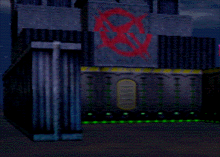
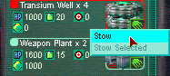
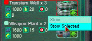
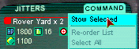
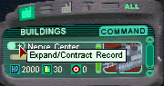

Back to Building Your Nerve Center
| Hover into the "paddock" area of the Nerve Center between the
two arms of the building, and hover into the back door to enter.
The next task you need to complete is to move you jitters from your Backpack into your Nerve Center. There are a number of ways you can accomplsh this. Please note that not all jitters go into the Nerve Center. |
 |
| Open your Jitter list and find your "Transium Well" Jitters.
Right click on the Well icon, and select Stow. This places one of your Well Jitters into
the Nerve Center's inventory.
You can also 'drag-n-drop' your jitters onto the your Nerve Center. |
 |
| If you have more than one Well left, you can stow a "stack" of records by right-clicking and selecting "Stow Selected." |  |
| To quickly Stow ALL jitters that can go into the Nerve Center, press the 'Stow All' hot key (default is F3). |  |
| Click on the Building icon to bring up your building list, which has your one Nerve Center. To check on the Jitters that you have stowed, click the "+" next to the name to expand it to show inventory. |  |